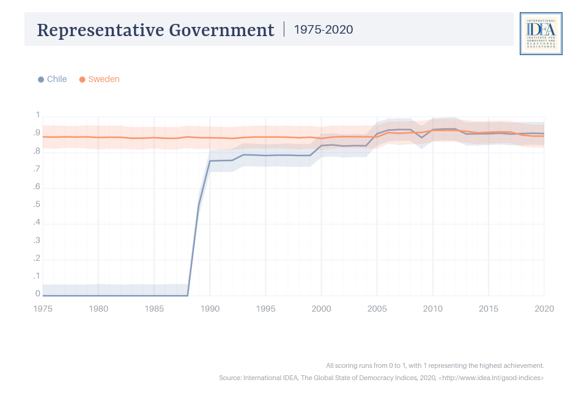
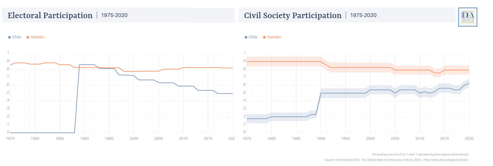
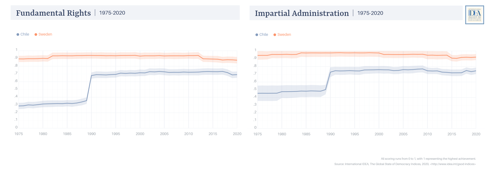

2.4 Comparación historica de la calidad de la democracia
En esta sección se describirá el desempeño de la democracia chilena y sueca en distintos ámbitos a lo largo del tiempo. Los gráficos solo incluyen información desde 1975 hasta el 2020. Los gráficos provienen directamente de la plataforma virtual de visualización de datos de el Índice de la Democracia (IDEA, 2022).
En el primer grafico se puede apreciar el desempeño de Chile y Suecia en una dimensión elemental de la democracia, la elección democrática del gobierno. Como se puede apreciar, aunque ambos países cuentan actualmente con niveles adecuados de la representatividad del gobierno, estos tienen historias y trayectorias distintas.
Las diferentes trayectorias de la democracia en ambos países poseen un efecto en la vida ciudadana. Mientras Suecia ha sido una democracia estable durante los últimos 50 años, Chile es una democracia desde 1990, pues desde 1973 hasta dicha fecha tuvo un gobierno dictatorial. Esto posee como consecuencia que varías cortes crecieron y vivieron su ciudadanía en un contexto donde la política y los partidos estaban prohibidos y eran perseguidos. Esto tiene como implicancia que varías generaciones, que incluso nacieron en democracia, se crían con padres que tuvieron una relación lejana con la democracia. [Buscar cita de efecto cohorte autoritarismo].

Los años de ausencia de la democracia se hacen presentes en las prácticas democráticas de los ciudadanos Chilenos. Suecia posee una alta participación, que es tan estable como lo ha sido su democracia. Por su parte, en Chile se puede observar un gran aumento de la participación al finalizar la democracia en 1990, no obstante, mientras avanza el periodo democrático se observa un descenso en esa participación. Respecto a la participación de los ciudadanos en organizaciones de la sociedad civil se destaca que Suecia posee una mayor participación que Chile, aunque este el de este ultimo ha crecido ligeramente en estos años, además del gran repunte posterior al fin de la dictadura Chilena. Por su parte, Suecia desciende ligeramente en este ámbito.

Junto con esta falta de participación de Chile, se puede observar un mejor cumplimiento de objetivos democráticos como la garantía de los derechos fundamentales y la administración imparcial por parte de Suecia respecto a Chile. En ambos ámbitos se puede observar que Suecia ha tenido un alto y estable desempeño, mientras que Chile tuvo en el periodo dictatorial un bajo desempeño. Algunos autores han señalado que la falta de garantía en los derechos de distintos países fomenta distintas visiones de lo que es un buen ciudadano, de modo tal que en aquellas democracias con mejor garantía de derechos fomentan visiones de ciudadanos más centradas en el la norma democrática que en la crítica. En una línea similar, y en relación con la imparcialidad de la administración, se ha señalado que las sensaciones de injusticias (que pueden ser producidas por tratos diferenciados) pueden fomentar actitudes de insubordinación.
